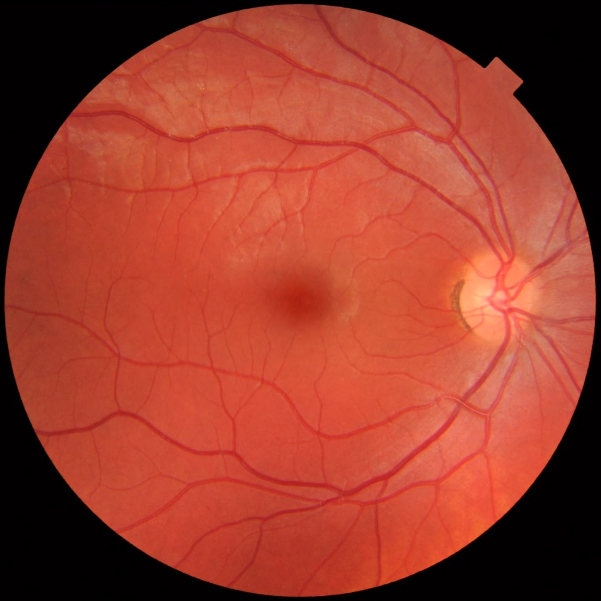

Página 8 · E5
Anamnese, fundo de olho e primária clínica
1) Anamnese em três eixos; 2) exame e fundo de olho; 3) fecho clínico da cefaleia primária.
Anamnese em 3 eixos
Cefaleia, por mais comum, não é simples de manejar: exige anamnese muito completa. A anamnese serve para: (1) caracterizar a crise; (2) avaliar semelhança entre as crises; (3) identificar sinais de alarme.
Examinar (FO em tese)
Também é preciso examinar o paciente — não só colher a anamnese. Sempre que viável, o exame deve incluir fundo de olho para pesquisar papiledema, um sinal de alarme. Trata-se de busca ativa recomendada, não de dogma aplicável indistintamente a todo cenário.
Fecho da primária clínica
Se não há sinal de alarme, o exame físico é normal e há crises semelhantes que recorrem → o diagnóstico de cefaleia primária está dado. Na cefaleia primária, o diagnóstico é clínico.
Secundária investiga
Nas secundárias, é necessária investigação complementar para saber o que causa a dor. Binário operacional do fecho: primária = clínico · secundária = investigação.

Quiz — fixação
-
O diagnóstico de cefaleia primária é:
Gabarito B. primária se fecha na clínica quando o trinômio fecha.
(A)(C)(D) são ferramentas de secundária/hipóteses específicas. Cai por “medicina moderna = imagem para tudo”.
-
A anamnese da cefaleia precisa, no mínimo, cobrir:
Gabarito B. os três eixos são o esqueleto da anamnese.
(A) intensidade isolada é pobre. (C)(D) úteis em outros contextos, não substituem o esqueleto. Cai por anamnese “genérica de dor” sem tempo/padrão/alarme.